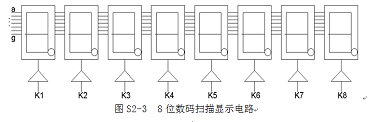

1．了解教学系统中8位八段数码管显示模块的工作原理，设计标准扫描驱动电路模块，以备后面实验调用。
2． 会电路图输入方法和VerilogHDL语言方法输入的混合使用。
1．GW30/50+PK2实验系统。
1．计数器（counter）：
计数器（counter）是数字系统中常用的时序电路，因为计数是数字系统 的基本操作之一。计数器在控制信号下计数，可以带复位和置位信号。因此，按照复位、置位与时钟信号是否同 步可以将计数器分为同步计数器和异步计数器两种基本类型，每 一种计数器又可以分为进行加计数和进行减计数两种。在VerilogHDL描述中，加减计数用“＋”和“－”表示即可。
（1）同步计数器：
同步计数器与其它同步时序电路一样，复位和置位信号都与时钟信号同步，在时钟沿跳变时进行复位和置位操作。
count是一个带时钟使能的同步4位二进制减法计数器，计数范围F～0。每当时钟信号或者复位信号有跳变时激活进程。如果此 时复位信号clr有效（高电平），计数器被复位，输出计数结果为0；如果 复位信号无效（低电平），而时钟信号clk出现上升沿，并且计数器的计数
使能控制信号en有效（高电平），则计数器count自动减1，实现减计数功能。
（2）异步计数器
同样的道理，异步计数器是指计数器的复位、置位与时钟不同步。
counta是一个带时钟使能的异步4位二进制加法计数器，计数范围0～F。每当时钟信号或者复位信号有跳变时激活进程。如果此时复位信 号clr有效（高电平），计数器被复位，输出计数结果为0；如果复位信号无效（低电平），而时钟信号clk出现上升沿，并且计数器的计数
使能控制信号en有效（高电平），则计数器count自动加1，实现加计数功能。
2．八位数码扫描显示电路设计
图S2-3所示的是8位数码扫描显示电路，其中每个数码管的8个段：h、g、f、e、d、c、b、a（h是小数点）都分别连在一 起，8个数码管分别由8个选通信号k1、k2、…k8来选择。被选通的数码管显示数据，其余关闭。如在某一时刻，k3为高 平，其余选通信号为低电平，这时仅k3对应的数码管显示来自段信号端的数据，而其它7个数码管呈现关闭状态。根据这种电路状况，如果希望在8个数码管显示 希望的数据，就必须使得8个选通信号k1、k2、…k8分别被单独选通，并在此同时，在段信号输入口加上希望在该对 应数码管上显示的数据，于是随着选通信号的扫变，就能实现扫描显示的目的。
对该例进行编辑、编译、综合、适配、仿真，给出仿真波形。实验方式：若考虑小数点，SG的8个段分别与PIO49、PIO48、…、PIO42（ 高位在左）、BT的8个位分别与PIO34、PIO35、…、PIO41（高位在左）；电路模式不限 ，引脚图参考图s2-4。将GW48EDA系统左下方的拨码开关全部向上拨，时钟CLK可选择clock0，通过跳线选择16384Hz信号。引脚锁定 后进行编译、下载和硬件测试实验。将实验过程和实验结果写进实验报告
1.恰当选择电路结构，完成上述实验连线。
(1) 对于原理图设计要求有设计过程。对于VerilogHDL语言设计要求有源码。
(2) 详细论述实验步骤。
(3) 字形编码的种类，即一个8段数码管可产生多少种字符，产生所有字符需多少根被译码信号线？
(4) 字符显示亮度同扫描频率的关系，且让人眼感觉不出光闪烁现象的最低扫描频率是多少?